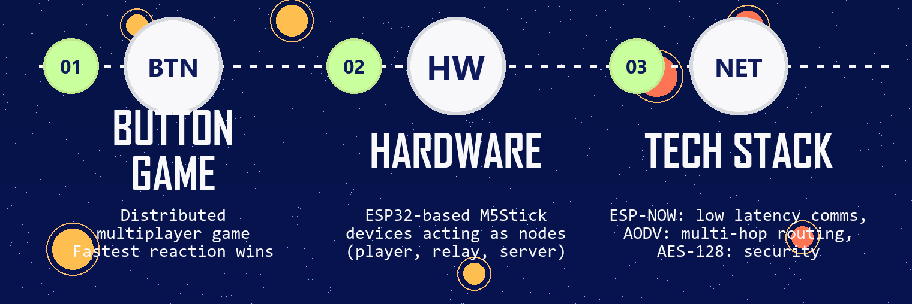

FastReact Distributed Quiz System
A Year 2, Trimester 2, 2026 IoT Protocols and Networks project that built a distributed multi-hop wireless quiz system on ESP32-based devices, using local timestamp arbitration, ESP-NOW, and AODV-like routing to keep first-responder detection fair under latency, congestion, and relay depth.

FastReact was designed as a distributed wireless quiz system where multiple players compete to press a button first, but the real engineering challenge was fairness rather than simple button input. In a real wireless environment, the packet that reaches the server first is not always the button that was physically pressed first because network jitter, congestion, and relay depth can distort arrival order.
The project addressed that by shifting the decision logic away from server receive time. Each ESP32-based node started its own timer when it received a synchronized GO signal and then sent its local reaction_ms back to the server. That meant the winner could be decided using local timing instead of packet arrival order, which is the central idea that made the system latency-resilient.
The full prototype combined ESP-NOW for low-latency connectionless communication, a simplified AODV-like routing approach for relay support, and lightweight security controls such as ESP-NOW AES-128 unicast encryption, HMAC-based authentication, replay suppression, and protocol-version checks. The result was a small but fully distributed IoT system that treated fairness, routing, and security as part of one design problem.
Problem framing
- Targeted a fairness problem in wireless first-responder systems, where packet arrival order becomes unreliable once congestion, jitter, and relay hops are introduced.
- Reframed the quiz-buzzer idea as a distributed systems problem rather than a simple input problem, because routing topology and radio behaviour directly affect outcome quality.
- Set out to guarantee fair winner determination independent of network congestion, routing depth, and packet arrival timing.
Network and routing design
- Used ESP-NOW to support low-latency, connectionless communication between ESP32-based nodes without requiring external infrastructure.
- Added a simplified AODV-like routing layer so out-of-range players could still participate through intermediate relay nodes.
- Let the server broadcast authentication and GO packets, while players discovered or refreshed routes using RREQ-style logic and sent PRESS packets back directly or through relays.
Fairness mechanism
- Started each player timer when the GO packet was received locally, then measured elapsed time until the physical button press.
- Compared reaction_ms values at the server instead of using packet arrival order, which decoupled winner selection from network variability.
- Allowed fairness to hold even when a player depended on a relay path, because the transport delay happened after the local timing decision had already been recorded.
Security and integrity
- Protected unicast communication using ESP-NOW PMK/LMK encryption while keeping the communication path lightweight enough for gameplay timing.
- Used HMAC-SHA256 packet signing over stable fields so relay nodes could update routing metadata such as hop count and TTL without breaking end-to-end validation.
- Added replay suppression through a seen table keyed by origin and packet ID, plus protocol-version checks to reject incompatible or duplicated traffic.
Testing outcomes
- The direct-link experiment achieved 100% packet send success, with only one ACK timeout that recovered automatically through retry.
- Fairness testing across 19 rounds produced zero fairness errors, confirming that the fastest actual player still won when judged from local timing logs.
- The 1-hop relay test also achieved 100% delivery success, and although mean round-trip latency increased, the poster and report both note that the added relay forwarding delay itself was only milliseconds and did not change winner correctness.
Performance and constraints
- The poster summary lists direct throughput at 22.2 pkt/s and relay throughput at 3.8 pkt/s, which was still enough for the system's short burst-style gameplay traffic.
- Scalability was constrained by ESP-NOW's encrypted peer limit, which the report notes at around 20 paired peers in encrypted mode.
- The design also retained known limitations such as static embedded secrets, lack of server failover, broadcast traffic that is not protected by unicast encryption, and timer precision capped at millisecond resolution.
Why it mattered
- The project showed how fairness in an IoT application can be preserved without global clock synchronization or dependence on receive order.
- It combined communication, routing, security, and application logic into one coherent prototype rather than treating each concern in isolation.
- Beyond quizzes, the same timestamp-based arbitration approach could be relevant to industrial trigger systems, classroom response tools, emergency coordination, and other event-driven IoT scenarios.
Tools and concepts
Project material
This page is based on both the A1 poster and the design review report, especially the problem statement, network design, testing, and results sections.